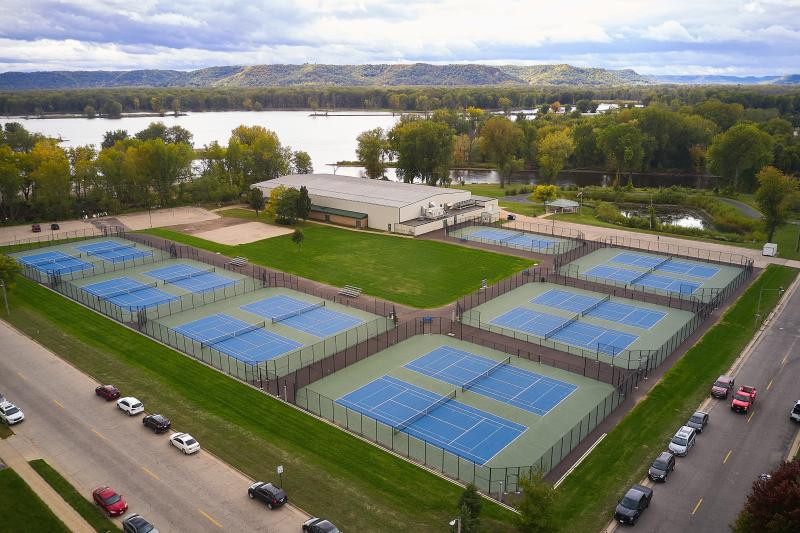

Green Island Tennis Courts
Green Island Tennis Courts
The Green Island Tennis Courts are located in La Crosse, Wisconsin, and are a popular destination for tennis enthusiasts in the area. The facility features multiple courts that are well-maintained and open to the public. These courts are used for recreational play, league matches, and tournaments.
Court Numbering
The courts at Green Island are numbered sequentially from 1 to 3. Court is the court by itself, closest to the building. The courts are then grouped in pairs, with court 13 being on the far left side of the facility in the photo In case of conflicts with other events, we generally use Central High School courts for our matches if possible
How LTTA Uses Courts
The teams will be assigned a group of courts for their matches. The groups are as follows:
- Courts 1-5:
- Courts 6-9:
- Courts 10-13:
Teams play on the courts in ascending order. In the case of teams playing at courts 6-9: One and Two doubles is court 6, Three doubles are court 7, and 8 and Four and Five doubles are court 6.
Facility Overview
A view of the Green Island Tennis Courts in La Crosse, Wisconsin. Courts 1- 7 are lighted, and come on automatically at dusk. Courts 8-13 are not lighted.